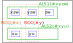

ALS
ALSは、ALSリンク、およびRCC(特性)によって、様々な数独を解くアルゴリズムの中で重要な役割を果たしています。
(1) ALS
Locked Setは、同じhouseに属する"n個のセルにn個の候補数字がある"状態です。
どのセルがどの数字かは決まらないが、部分集合として確定した状態（Locked）です。
ALSは同じhouseに属する"n個のセルにn+1個の候補数字"がある"ほぼLocked"状態です。
何らかの方法でALS外で数字が確定し、ALSから1数字が除かれると、ALSはLockedになります。
ALS単独では解法として成立しませんが、何かと組合せて様々な解析アルゴリズムが作れます。
最小のALSは、"1セル2候補数字"です。
(2) A2LS, AnLS
ALSは、素朴な形で"m個のセルにm+n個の候補数字"のセル群 "AnLS"に拡張できます。
GNPX v5 では、A2LS を用いる ALS-XZ リンクを使います。
また、SueDeCoqの解法アルゴリズムとして AnLS を用いる方法を示します（AnLSの他に ALS, RCCを用います）。
(3) RCC
2つの ALS(AnLS) の関係する解析アルゴリズムでは、共通の数字が制限する効果を利用します。
次の図には2つのALSがあり、これらが次の条件を満たすとき、
その数字をRCC (Restricted Common Candidate:制限された共通候補）と呼びます。
条件:重なりのない2つのALSに共通の数字があり、それらが同じhouse内にある。
(オレンジ点線枠、ALSのhouseとは異なる）。
RCCは同じhouseに属するので、RCCは一方のALSのみ肯定であり、他方のALSではRCCは否定です。
ただし、どちらのALSで肯定かは決定していません。
ここに何らかの条件が加わり、RCCが一方のALSで肯定("RCCがこのALSにある"）となると、
他方のALSでは否定("RCCはこのALSにない"）が確定します。
否定となったALSでは"n個のセルにn個の候補数字"となり、 このALSはLockedSetになります。
次の図は、2つのALS間にRCCが2つあるケースです（doubly linked)。
RCCは一方のALSにのみあります。doublylinkedの場合は2つのRCCが一方のALSに片寄ってあることはなく、
それぞれのALSにひとつづつあります。ただし、どのRCCがどちらのALSにあるかは、決定していません。
doublylinkedのALS組は、一体としてLockedSetのように振舞います。

また、AnLSでは3個以上のRCCを用いる場合もあります。